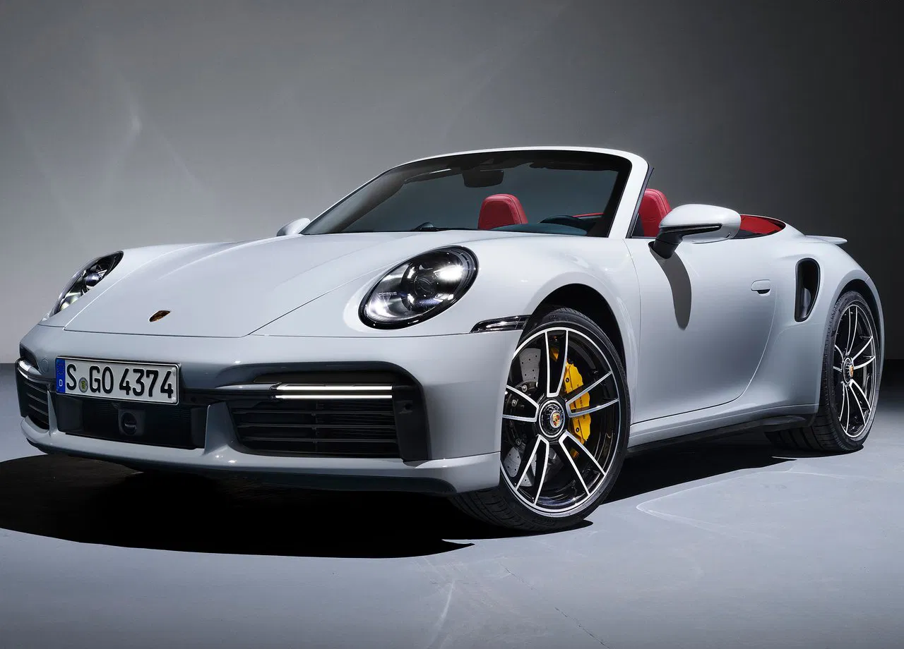
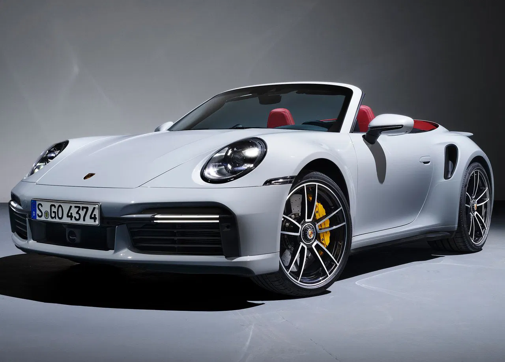

Au pays des 4-cylindres en ligne et autres V6, le moteur «boxer» aurait presque tendance à passer pour un irréductible gaulois. Pourtant, il n’en a pas toujours été ainsi: certaines des plus importantes voitures de tous les temps étaient propulsés par des moteurs à plat.Aujourd’hui, Porsche et Subaru sont les deux derniers constructeurs à proposer dans leur catalogue des modèles dotés de moteurs boxer. Concernant Porsche, cela n’a rien d’étonnant puisque c’est dans l’ADN de la marque depuis belle lurette. Le constructeur utilise effectivement le Flat-4 depuis le lancement de ses premières 356, voire même depuis que Ferdinand Porsche a commercialisé sa première Volkswagen, la Coccinelle. Aussi, il n’est pas étonnant de voir la firme de Zuffenhausen mettre le moteur à plat à l’honneur dans l’une de ses vidéos «Top 5». Présenté par le spécialiste de la préparation Jean Pierre Kraemer et Hans Mezger, ingénieur Porsche de renom, le reportage revient sur les cinq avantages principaux des moteurs à plat.La première partie de la vidéo évoque l’abaissement du centre de gravité permis par un moteur à plat par rapport à un bloc conventionnel (en ligne ou en V). Est ensuite abordé la question la turbocompression à géométrie variable, spécialité du constructeur allemand. Ensuite, la vidéo se poursuit avec la répartition des masses: positionné en porte-à-faux arrière, le flat-six optimise la motricité de la 911 lors des phases d’accélération. Quatrième avantage: le mouvement opposé des pistons n’engendre que très peu de vibrations. Pour finir, les deux hommes parlent de l’influence qu’a eu le moteur boxer sur le design des 911. La vidéo : "revueautomobile.ch"
 
Les sources : "porsche.com" "motorsactu.com"

Les sources : "porsche.com" "motorsactu.com"